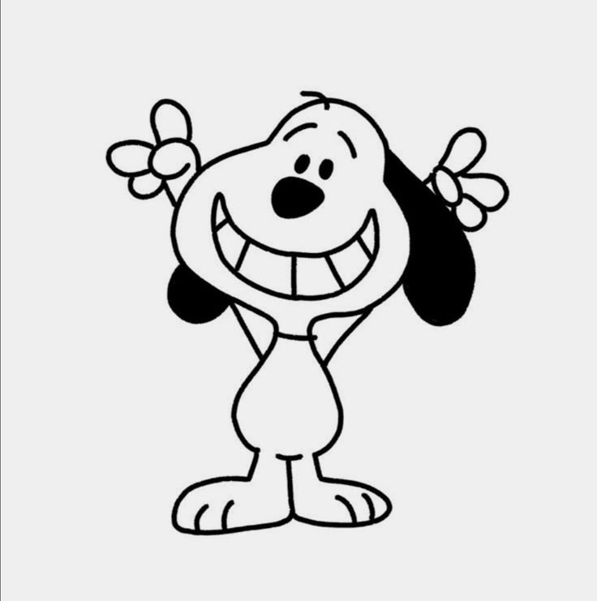

I’m Scarlett Alonso, a sophomore majoring in Media Arts and Design. My motivation for learning critical web design is that I strive to not only simply building websites which is cool to me. But also understand how these spaces shape human behavior, and society. I want to make sure everyone is taken into account leaving no one behind due to disability, slow internet speed, etc. I have always loved being creative and helping people therefore I think this would be a great opportunity for me to grow. Also, I want to understand the why behind things, such as why certain design choices are made. I selected an image of Snoopy because, first, I think he’s cute and second, he represents creativity and self-expression.

This page is dedicated to blocking distractions, whether it’s to concentrate on schoolwork, a job, or be more involved outside. This page inspires me first due to its structure; I love the colors, text, and graphics used. Overall, the page is pleasing to look at. Second, this page shows promising results in improving productivity levels. I really enjoy this page because it promotes something that helps you grow.
Open Color is a very simple-looking page that provides color swatches, downloads, and coding help for specific colors. I really like the simplicity of the page, how there are various types of colors to choose from, and that they are organized in a rainbow. This page is useful for UI design, and I think it meets its goal.
This website provides information about pollution and its causes and effects, mostly showing how tiny particles hurt our health, even leading to potential deaths. I like this website because it is interactive, bringing attention to a severe problem and encouraging people to take notice.